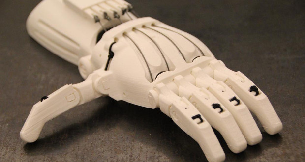
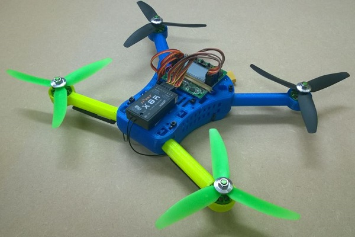

Post hanc adclinis Libano monti Phoenice, regio plena gratiarum et venustatis, urbibus decorata magnis et pulchris; in quibus amoenitate celebritateque nominum Tyros excellit, Sidon et Berytus isdemque pares Emissa et Damascus saeculis condita priscis.
Les projets Print'ISEN
Ultima Syriarum est Palaestina per intervalla magna protenta, cultis abundans terris et nitidis et civitates habens quasdam egregias, nullam nulli cedentem sed sibi vicissim velut ad perpendiculum aemulas: Caesaream, quam ad honorem Octaviani principis exaedificavit Herodes, et Eleutheropolim et Neapolim itidemque Ascalonem Gazam aevo superiore exstructas.
At nunc si ad aliquem bene nummatum tumentemque ideo honestus advena salutatum introieris, primitus tamquam exoptatus suscipieris et interrogatus multa coactusque mentiri, miraberis numquam antea visus summatem virum tenuem te sic enixius observantem, ut paeniteat ob haec bona tamquam praecipua non vidisse ante decennium Romam.
Ideoque fertur neminem aliquando ob haec vel similia poenae addictum oblato de more elogio revocari iussisse, quod inexorabiles quoque principes factitarunt. et exitiale hoc vitium, quod in aliis non numquam intepescit, in illo aetatis progressu effervescebat, obstinatum eius propositum accendente adulatorum cohorte.